Der Zug zählt
Auf der grossen Anzeige steht zuerst, wie weit der ganze Zug gekommen ist: alle Kilometer aller Läufer:innen zusammen. Erst darunter kommen die Namen.
Jede volle Stunde eine Runde von 6'706 Metern um Stockalpers Alten Spittel. Zusammen in die Nacht, so lange der Zug läuft.
In den Lostopf130 Startplätze · Vergabe per Lotterie
Barralhaus und Alter Spittel, 1910 · Glasdia Leo Wehrli, ETH-Bibliothek
In der Sage zieht niemand allein über den Pass. Das nehmen wir wörtlich. Am Graatzug zählt jede Runde, die jemand läuft, und alle, die dabei sind, gehören zum Zug. Ob du 3 Runden läufst oder 30.
Auf der grossen Anzeige steht zuerst, wie weit der ganze Zug gekommen ist: alle Kilometer aller Läufer:innen zusammen. Erst darunter kommen die Namen.
Zu jeder vollen Stunde stehen alle im Startbereich. Crews und Helfer:innen bilden die Gasse, durch die der Zug losläuft.
Nachts brennt an jedem Posten eine Laterne. Wer vorbeiläuft, weiss: Hier wartet jemand auf dich.
Wer aufhört, geht nicht einfach ins Zelt. Das Camp verabschiedet jede:n, und alle bekommen ihre Laterne mit der eigenen Rundenzahl.
Es gibt kein Preisgeld und keine Siegerehrung auf dem Treppchen. Wenn die letzte Runde startet, steht der ganze Zug an der Linie und wartet, bis sie zurück ist.
Auf der Runde darf man zusammen laufen, reden, schweigen. Nur helfen darf unterwegs niemand. So will es das Regelwerk.
Der Graatzug ist offiziell bei Big's Backyard Ultra registriert. Die Regeln bleiben deshalb die eines Backyards, und es gibt eine Resultatliste. Was wir feiern, ist der Zug.
Start und Ziel beim Barralhaus. Hinunter zur Niederalp, am Alten Spittel vorbei, hinauf nach Hopsche und über Gampisch zurück. Grosse Teile verlaufen auf Stockalpers Saumweg. Die Passstrasse wird nie gequert.
Aus OpenStreetMap gerechnet, Höhen aus einem Geländemodell. Vor dem Rennen mit dem Messrad auf exakt 6'706 m vermessen. Kein Schutzgebiet von nationaler Bedeutung.
Walliserdeutsch für «noch einmal». Ein offizielles Backyard nach den Regeln von Big's Backyard Ultra, im Rahmen des Last Soul Ultra.
Vier Meilen und 880 Fuss. Die Distanz jedes Backyards auf der Welt.
Die Glocke läutet drei, zwei und eine Minute vor dem Start.
Wer beim Läuten nicht im Startbereich steht, ist raus.
Keine Begleitung, keine persönliche Verpflegung, keine Stöcke.
Dein Quadrat im Base Camp. Nur dort hilft die Crew.
Stirnlampe nach Einbruch der Dunkelheit. Behördliche Anordnungen gehen vor.
Offiziell endet das Rennen, wenn jemand eine Runde mehr läuft als alle anderen. Bei uns wartet dann der ganze Zug an der Linie.
Die Säumer trugen Waren über den Simplon, hin und zurück, Woche für Woche, auf demselben Weg. Ein Backyard macht nichts anderes.
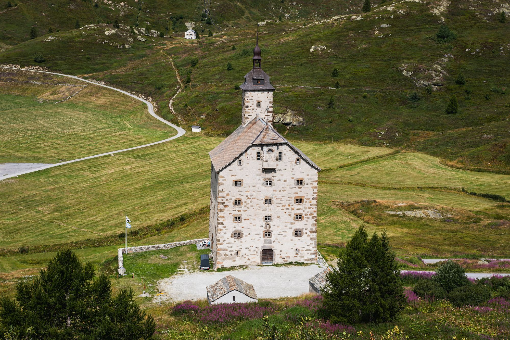
Kaspar Stockalper lässt ihn als Unterkunft bauen, gratis für Säumer, Waren und Saumtiere.
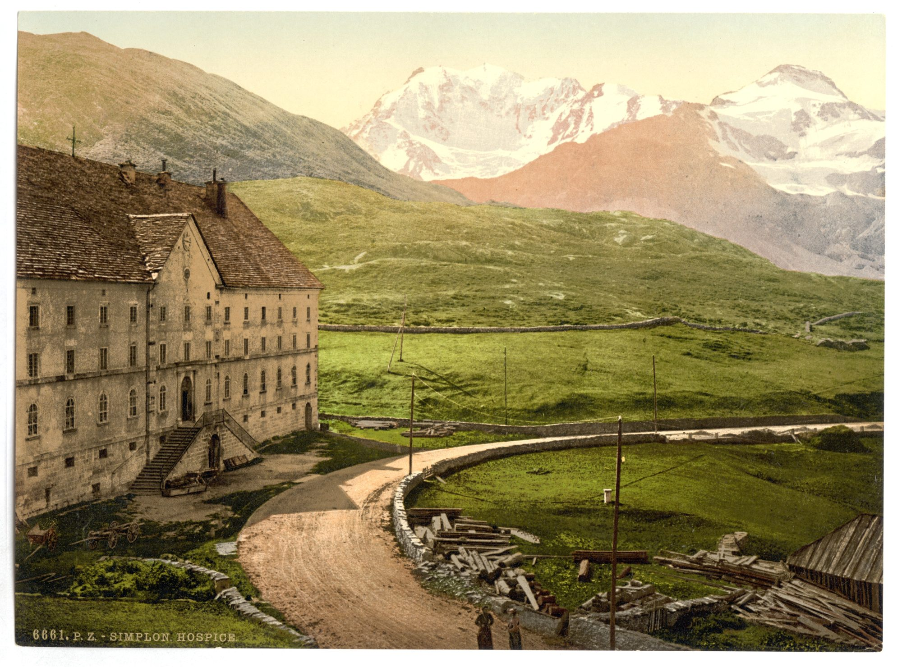
Die Passstrasse ist offen. Das neue Hospiz beziehen 1831 die Chorherren vom Grossen St. Bernhard.
Leo Wehrli fotografiert beide Häuser auf Glas. Genau hier steht 2027 das Base Camp.
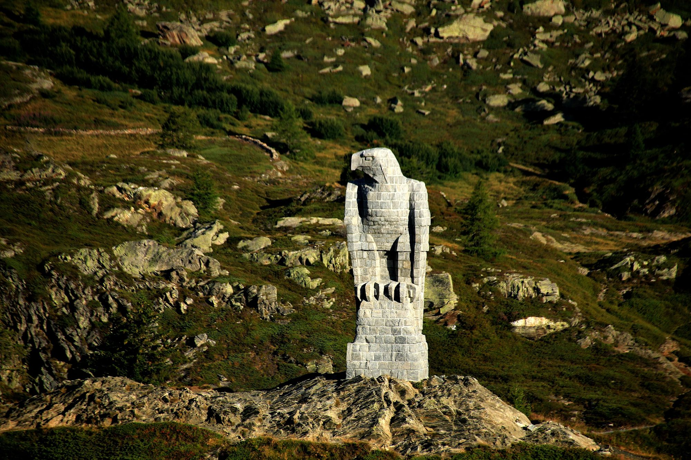
Die Gebirgsbrigade 11 baut ihn während der Grenzbesetzung, über neun Meter hoch, aus Granit.
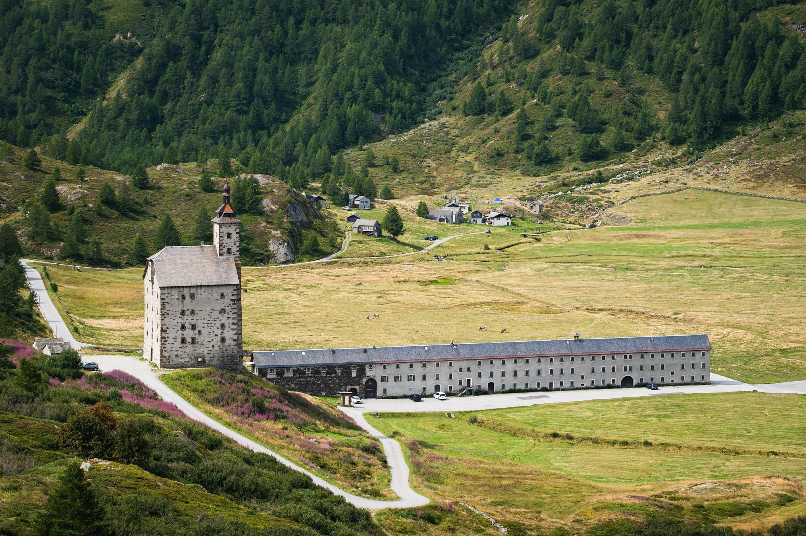
Samstag, 19. Juni, 12:00. Die erste Glocke am Barralhaus.
Nachts ziehen die armen Seelen in langen Zügen über Grate und Pässe. Wer sie hört, stellt sich oberhalb des Weges. Wer im Weg steht, «kommt in den Gratzug».
Tscheinen/Ruppen, Walliser Sagen 1872Ab Mitternacht zieht der Zug an einem Mann vorbei, drei lange Glockenstunden, bis zum Betläuten um drei Uhr.
Tscheinen/Ruppen 1872Der Sigrist von Ulrichen erkennt jedes Gesicht im Graatzug, nur das des Letzten nicht. Der Letzte ist er selbst.
«Unpaar Strümpfe», Josef GunternIn Bellwald heisst es, die Seelen müssten jede Nacht über neun Gräte und neunundneunzig Friedhöfe wandern.
Josef Guntern, Walliser Sagen 1963Um 1630 ermordet der Wirt Pera am Simplon einen Reisenden. Die Witwe erkennt den Sattel ihres Mannes unter vierzehn. Pera geht danach als schwarzer Hund um.
Josef Guntern, Walliser Sagen 1963In Albinen betet ein Pfarrer nachts im Graben. Wer über seine linke Schulter schaut, sieht den Graben voll armer Seelen.
Josef Guntern, Walliser Sagen 1963Ein Jäger findet zwei Seelen im Eis. Die eine steckt bis zu den Schultern darin und singt, weil ihre Erlösung naht.
Johann Jegerlehner, Walliser SagenDer Graatzug gehört dem ganzen Oberwallis, am Simplon selbst ist er nicht überliefert. Wir bringen ihn für ein Wochenende auf den Pass.
Zwischen Mitternacht und drei Uhr zieht in der Sage der Zug vorbei. Im Rennen sind das die Runden 13 bis 15. Der Spittel ist nur noch ein Umriss, und über dem Pass stehen so viele Sterne, wie man sie im Tal nie sieht.
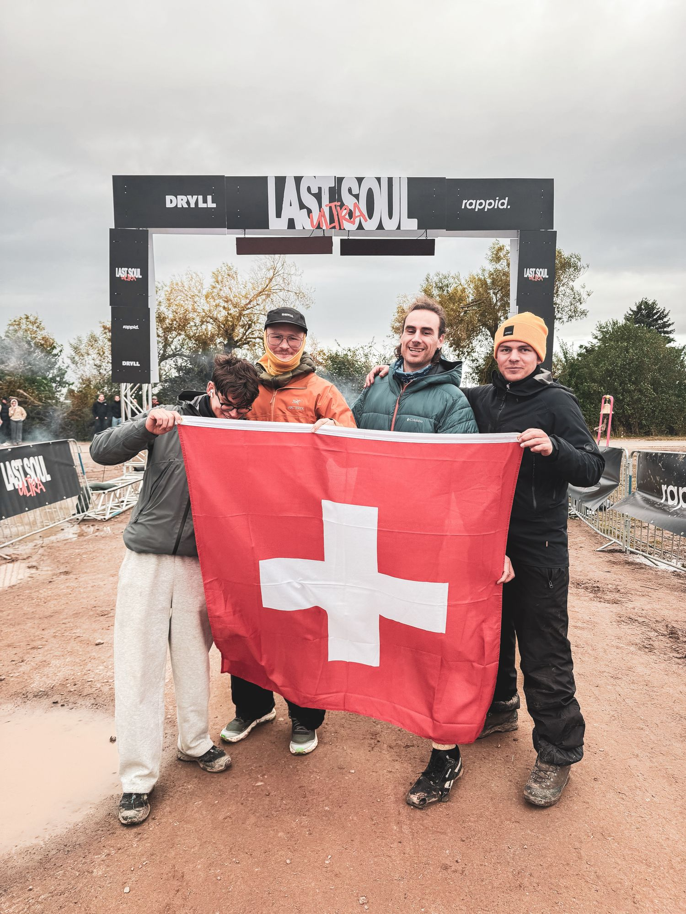
Ich bin das Last Soul zweimal gelaufen, 40 und 33 Stunden. Allein läuft man so etwas nicht. 2026 standen Daniel und Anes in meinem Zelt und haben mich Runde für Runde zurück an die Linie gebracht.
Danach war die Frage da, warum es so etwas bei uns nicht gibt. In den Bergen, im Wallis, auf einem Pass mit 360 Jahren Säumergeschichte.
Pierre Biege
Wettkampftechnik, Zeitnahme, Strecke und Sicherheitskonzept.
Sponsoring, Verpflegung und Übernachtung fürs Team.
Webseite, Anmeldung, Kommunikation. Läuft selbst mit.
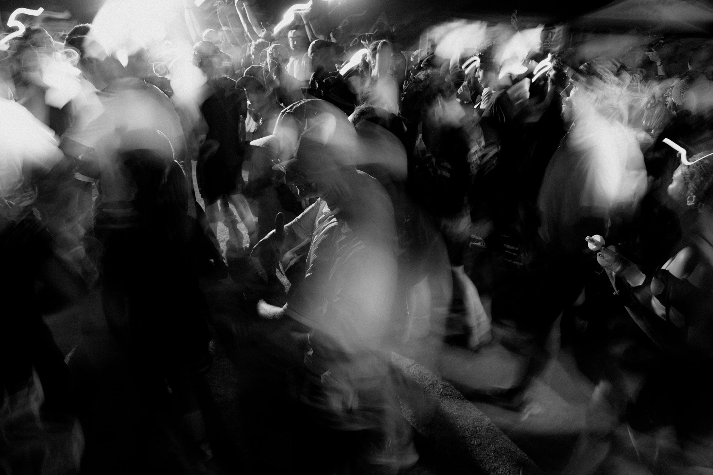
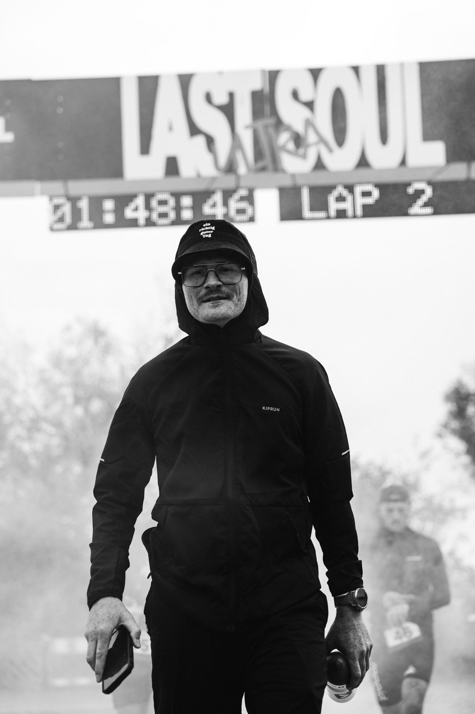
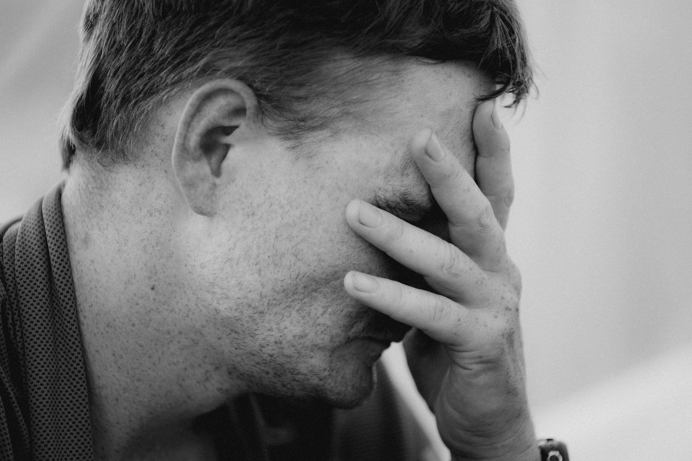
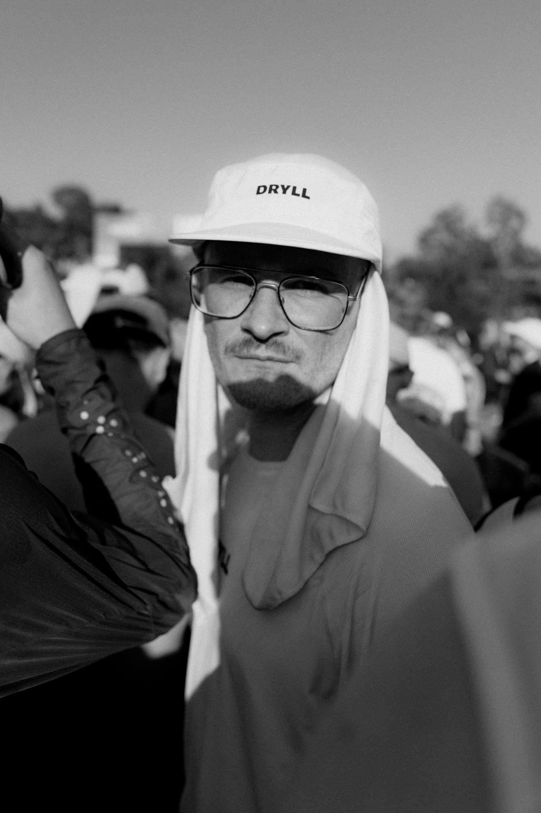
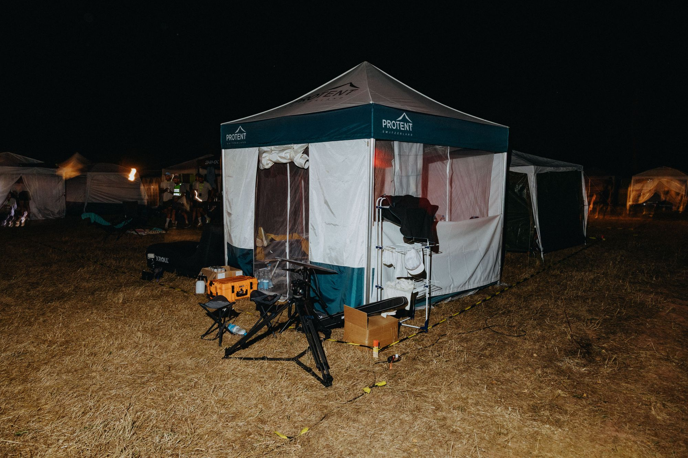
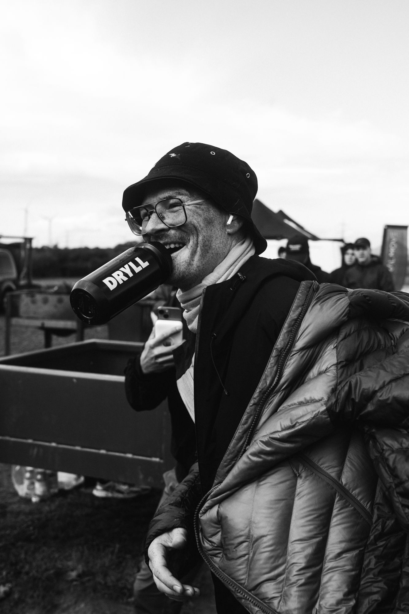
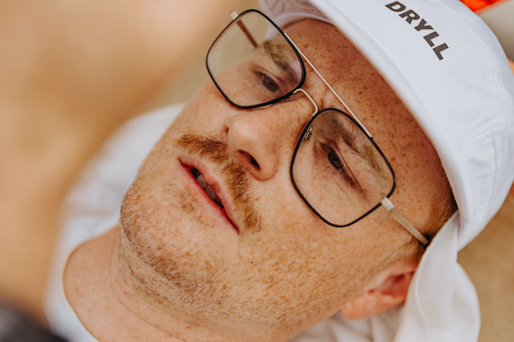
Der Graatzug läuft als offiziell affiliertes Backyard von Big's Backyard Ultra und als Soul Race des Last Soul Ultra.
Deine Runden fliessen in die Weltrangliste und in die At-Large-Liste des Schweizer Nationalteams. Die Resultate vom Juni 2027 zählen noch für das Qualifikationsfenster bis 15. August 2027.
Affiliierung in VorbereitungDas Last Soul Ultra vergibt Startplätze über unabhängige Soul Races. Der Graatzug soll das erste der Schweiz werden.
In Abklärung mit Kim GottwaldNach Varen und Saillon das dritte Backyard ohne Zeitlimit im Wallis und das erste auf einem Alpenpass.
Quadrate von 3 × 3 m auf Kies und Asphalt beim Barralhaus, die Wiesen bleiben frei. Heringe halten dort nicht: jedes Zelt mit vier Sandsäcken oder Gewichten von mindestens 15 kg beschweren.
Abfalltrennung, Mehrweg, Kaution für jedes Quadrat. Danach gehen wir die ganze Runde ab.
Sanität an allen drei Tagen rund um die Uhr, nachts zusätzlich auf der Strecke. Elektronische Zeitnahme, Rettungskette mit Spital Brig und Helikopter.
Wir laufen bei jedem Wetter. Behördliche Anordnungen und Unwetterwarnungen gehen vor.
Strom gibt es nur für die Organisation. Du und deine Crew versorgt euch selbst, zum Beispiel mit Powerbanks.
Läufer:innen und Crews im Camp, Familien und Zuschauer:innen im Hospiz und in den Hotels.
Anreise mit dem Postauto oder Auto. Quadrat beim Barralhaus beziehen. Wer will, kommt schon Freitagabend.
Runde, Regeln, Sicherheit, Wetter. Pflicht für alle.
Runde 1. Ab jetzt zählt nur die nächste Stunde.
Runde 13. Drei Glockenstunden bis zum Betläuten.
160,9 Kilometer. Wer noch steht, geht in den zweiten Tag.
Der ganze Zug steht an der Linie und wartet.
Ausweichdatum 26. Juni 2027. Vorbehaltlich der Bewilligungen.
Wir vergeben rund 130 Startplätze per Lotterie und einige Wildcards. Trag dich jetzt in den Lostopf ein. Nach Anmeldeschluss ziehen wir die Startplätze und melden uns bei allen per Mail.
Zusätzlich vergeben wir Wildcards. Poste ein Video auf Social Media, in dem du erzählst, warum du in den Zug willst, und markiere uns. Die genauen Regeln folgen hier.
Warum? Wir sind am Simplon zu Gast. Die Gemeinde und das VBS stellen uns den Platz beim Barralhaus zur Verfügung, und wir wollen ihn sauberer hinterlassen, als wir ihn übernehmen.
Zurück bekommst du sie nach dem Rennen, wenn du das Camp verlässt: Dein Quadrat ist leer, der Abfall getrennt entsorgt, und jemand vom Team hat es abgenommen. Du bekommst das Geld dann direkt zurück.
Beim Simplon Hospiz ist es laut dem SLF seit 1997 im Median ab dem 13. Mai schneefrei, Mitte Juni ist schneesicher. Die Passstrasse ist das ganze Jahr offen, das Barralhaus bietet befestigte Flächen fürs Camp, und die Runde kommt ohne Strasse und ohne Schutzgebiet aus.
Formal ja, weil wir ein offizielles Backyard sind und es eine Resultatliste gibt. Gefeiert wird aber der Zug. Es gibt kein Preisgeld und kein Podest. Wer 3 Runden läuft, gehört genauso dazu wie jemand mit 30.
Du trägst dich kostenlos in den Lostopf ein. Nach Anmeldeschluss ziehen wir rund 130 Startplätze. Wer gezogen wird, bezahlt Startgeld und Kaution und meldet danach seine Crew an. Alle anderen kommen auf die Warteliste und rücken nach, wenn jemand absagt.
Ja. Wir laufen nach den Regeln von Big's Backyard Ultra und melden das Rennen als affiliiertes Backyard an. Deine Runden zählen damit für die Weltrangliste und die Schweizer Nationalteam-Selektion.
Nein. Der Graatzug gehört dem ganzen Oberwallis, am Simplon selbst ist er nicht überliefert. Quellen: Tscheinen/Ruppen, Walliser Sagen (1872), Josef Guntern und Johann Jegerlehner.
Damit alle am Samstagmorgen anreisen können, auch mit dem Postauto ab Brig. Check-in ab 07:30, Briefing um 10:30, Start um 12:00. Wer möchte, bezieht sein Quadrat schon am Freitagabend.
Ein Zelt oder Pavillon für dein Quadrat von 3 × 3 m und vier Sandsäcke oder Gewichte von mindestens 15 kg. Das Camp steht auf Kies und Asphalt, Heringe halten dort nicht, und am Pass kann es stark winden. Strom gibt es keinen, bring Powerbanks mit.
Mit dem Postauto ab Brig bis zum Simplon Hospiz oder mit dem Auto über die Passstrasse. Parkplätze beim Alten Spittel und beim Hospiz. Bitte Fahrgemeinschaften bilden.
Ein Backyard läuft grundsätzlich bei jedem Wetter. Anordnungen der Behörden und Unwetterwarnungen von MeteoSchweiz der Stufen 4 und 5 gehen vor, dann unterbricht die Rennleitung. Die Regeln stehen im Reglement, bevor die Anmeldung öffnet.
Wie beim Last Soul: bis zu vier registrierte Crew-Mitglieder, drei gleichzeitig vor Ort. Geholfen wird nur im Base Camp.